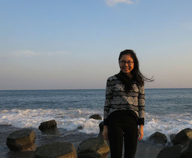

|  | SZE YueHonours Student (Alumna)
Email: szeyue(AT)u.nus.edu |
Honours Project
I am a Life Sciences undergraduate, specialising in Environmental Biology. I have always had a keen interest in the marine environment, especially on marine biodiversity, ecology and conservation. For my Honours project, I will be studying an important foundation of marine food webs--microscopic phytoplankton which, despite its importance, remains poorly known and understood in many aspects, especially in Singapore’s context. My project focuses on dinoflagellate communities through the use of DNA-based methods to identify and compare dinoflagellate species found in the western waters of Singapore. Apart from using molecular tools to determine dinoflagellate diversity, a DNA barcode database would also be established for species that have been detected. I hope to demonstrate how the use of such molecular techniques could be extended in future to establish a more comprehensive dinoflagellate database for Singapore.